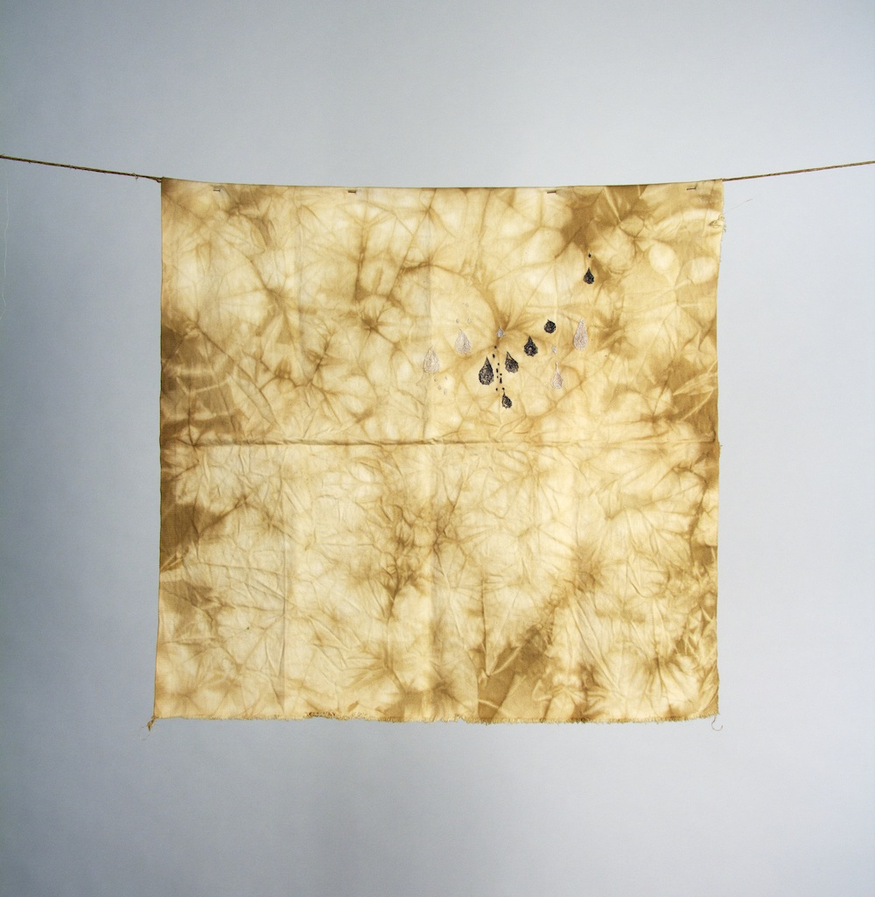
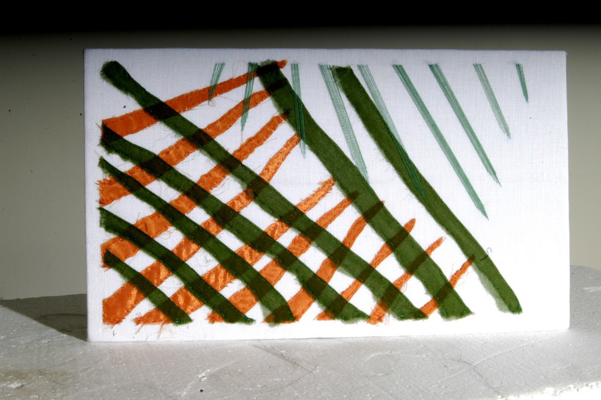
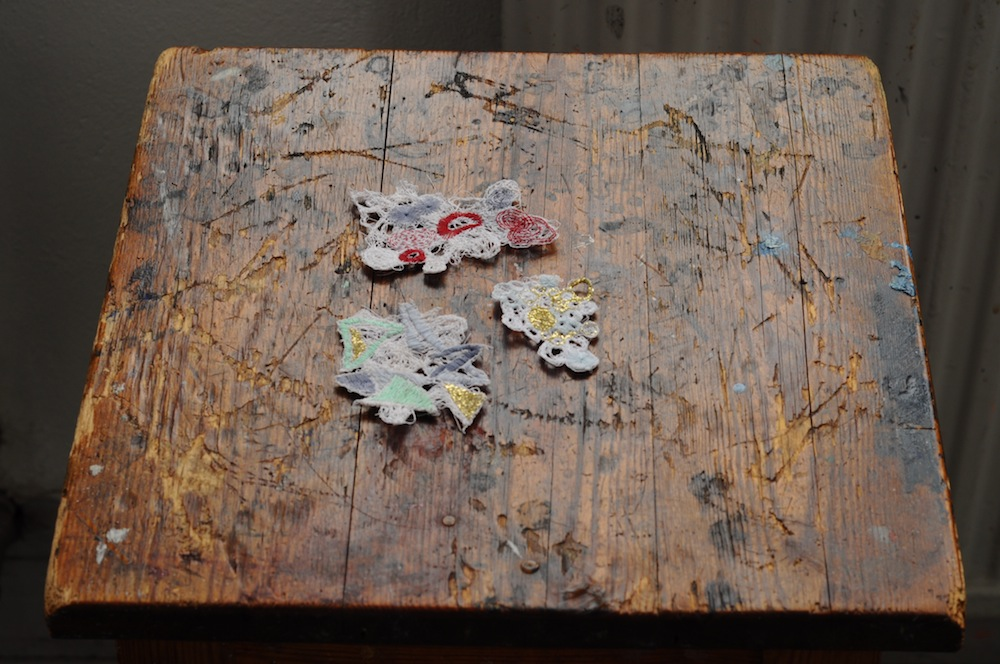
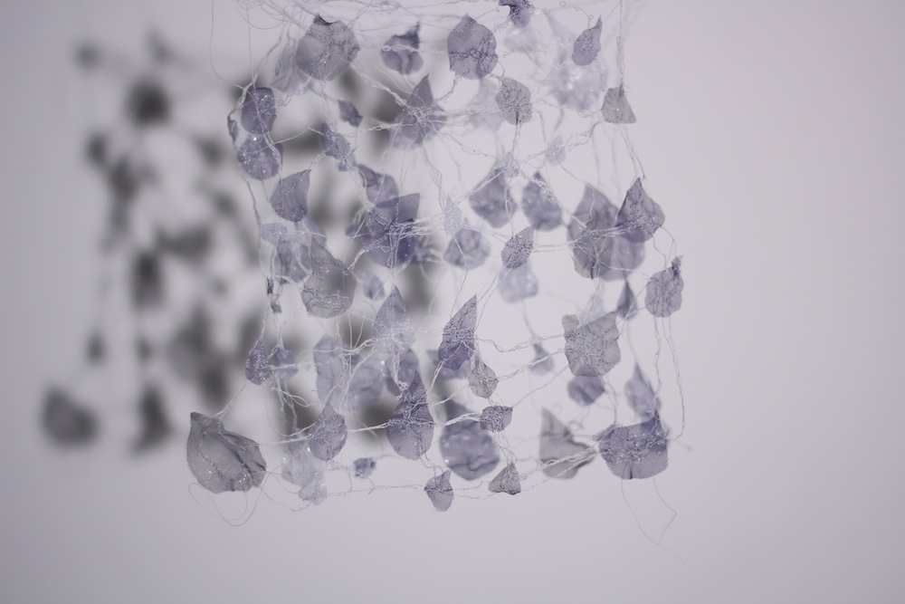

Emotions
 osse hade svårt att hitta inspirationen i denna kurs, jag tror det berodde på att jag inte kände mig hemma i staden. Jag var ganska ensam den första tiden och det gjorde att jag hade svårt att koncentrera mig. Det som tillslut inspirerade mig var det eviga regnandet och mina tårar. Regnar gör det hela tiden och det är min bild av Göteborg, alltid denna nederbörd.
osse hade svårt att hitta inspirationen i denna kurs, jag tror det berodde på att jag inte kände mig hemma i staden. Jag var ganska ensam den första tiden och det gjorde att jag hade svårt att koncentrera mig. Det som tillslut inspirerade mig var det eviga regnandet och mina tårar. Regnar gör det hela tiden och det är min bild av Göteborg, alltid denna nederbörd.
Tårarna kom mycket den första månaden dels för min pappa men också för att det var ensamt och vemodigt att sitta själv i en förort till Göteborg. För att komma ur min "tycka synd om" period lät jag det bli min inspiration till kursen, och den har fått namnet "Tårar och Regn" av mig.
För att komma igång och bli vän med fiberverkstan hade vi olika workshops. En för att lära oss stickmaskinerna och bekanta oss med dem och en där vi fick experimentera med olika material.
Tårar - Broderi på växtfärgat och batikat tyg
Regn - Sidenorganza och sytråd



